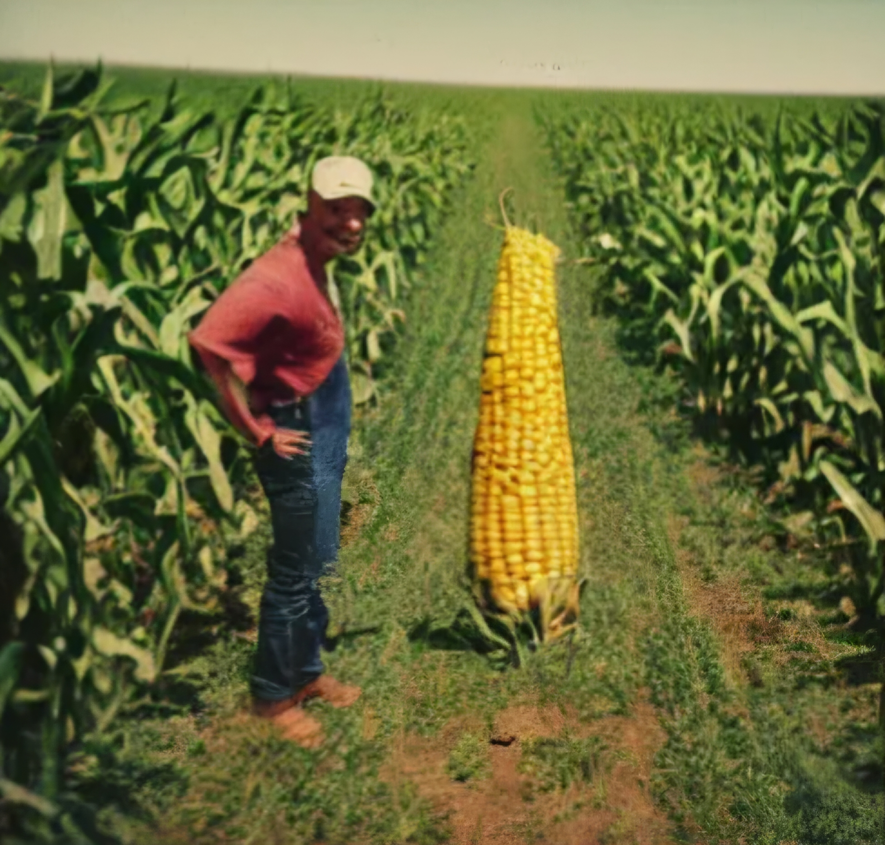

Letter from Farmer Jenkins
Thank you Mr. Jenkins for including the lovely picture of your Corn farm. May your soil be rich, your harvests be abundant, and your hard work always be blessed with prosperity and peace.
Dear Mr. Gato Fiero,Howdy. My name’s Earl Jenkins. I’m a corn farmer here in Muscatine County, Iowa. I don’t write much, so hope this makes sense. I just gotta tell ya somethin’ strange that’s been happenin’ on my farm, and I reckon it’s got somethin’ to do with your music.
My boy, Billy, been playin’ your tunes out in the barn while he’s workin’ on the tractor and feedin’ the cows. I don’t know much ‘bout music, but it’s like the land and the animals been listenin’, too. My corn’s been growin’ higher and thicker than I ever seen. Stalks so tall they look like they’re tryin’ to reach the moon, and the ears are fuller than any I ever had.
But it ain’t just the corn. My soybeans are poppin’ like crazy, tomatoes in my wife’s garden look like they come straight outta a seed catalog, and the cows—well, they’re givin’ milk so sweet and thick I can’t keep it off the neighbor’s table. Even the chickens been layin’ more eggs than usual. It’s like everything’s comin’ alive to your music.
I took some of the corn and milk to the county fair last week. Folks couldn’t believe it. They said my corn was the biggest they ever seen, and one fella asked me if I was usin’ some kinda “science fertilizer.” I told ‘em the only thing different is Billy playin’ Gato Fiero out in the barn. Folks laughed, but I ain’t laughin’. I’m scratchin’ my head tryin’ to figure how music can do all this.
I ain’t never seen nothin’ like it in my life, and I been farmin’ for a good 30 years. It’s like your music is speakin’ to the soil, the crops, and even the cows. I don’t know how else to put it, but it’s workin’. So I’m writin’ to you to ask: how’s this possible? Do you got special songs for certain crops or somethin’? I’d sure like to know, ‘cause whatever this is, it’s a blessing.
Anyway, I just wanted to say thanks for makin’ the music, even if I don’t understand how it works. If you got any more of them songs that can help, I’d love to hear ‘em. The Jenkins farm could use all the help it can get.
Take care,
Earl Jenkins
Farmer, and now, big believer in Gato Fiero